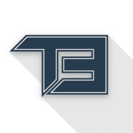

{{Page.getLogo()}}
{{Page.getTitle()}}
search
The Entropics
home
{{translation.home.title}}
developer_board
{{translation.services.title}}
theaters
{{translation.films.title}}
headset
{{translation.music.title}}
info_outline
{{translation.info.title}}